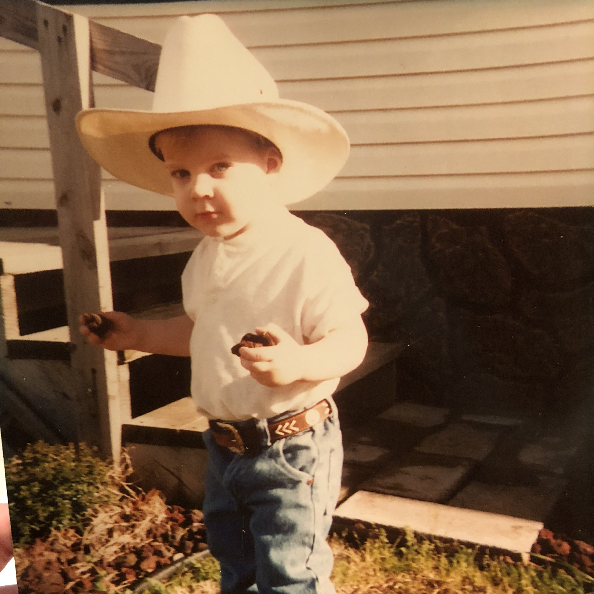

Past
In the beginning
As young man, I lived in Wylie, which was a small town in Texas (at the time) with my family. Growing up I never really knew what I "wanted to be" when I grew up, I had a bad habit of trying to sell things, even when they weren't really mine or had no monitary value. Fond memories of sitting in the driveway, selling sea shells to all of the neighborhood kids after a beach vacation. While in grade school, I was never the one to be considered an amazing student. This wasn't because I was a trouble maker or anything but I was known to talk a lot and only do homework when there was a full moon. Most of my young life was very average and simple. Growing through the years, I didn't really have a plan after high school. After graduation, I decided what better way to get some direction in life than to join the military. After a few years of fun and exciting activities, I returned back to Texas and started working for a small company where I learned a lot about customer service
and accounting while teaching myself about the basics of Web Development. After 3 years there, I left to begin working for a payment processor as a customer support rep. When an Integration Specialist position became available, I jumped at the moment and applied. Reluctantly, I was given the position.
Present
Currently
I am working as an Integration Specialist
which has given me an immense amount of experience as well as insight into many other technologies and structures. With a lot of what I do from day to day is working with people to help their programs and web apps to connect to our servers. Meanwhile, I am honing my skills in web development, both front and back end.
Future

Moving Forward
I'm not entirely sure what direction I'm going in or even what I'm looking to accomplish other than to keep building great things and learning every aspect of the development field. Being only 25, while there is a lot of pressure to succeed, great things come to those with patience.